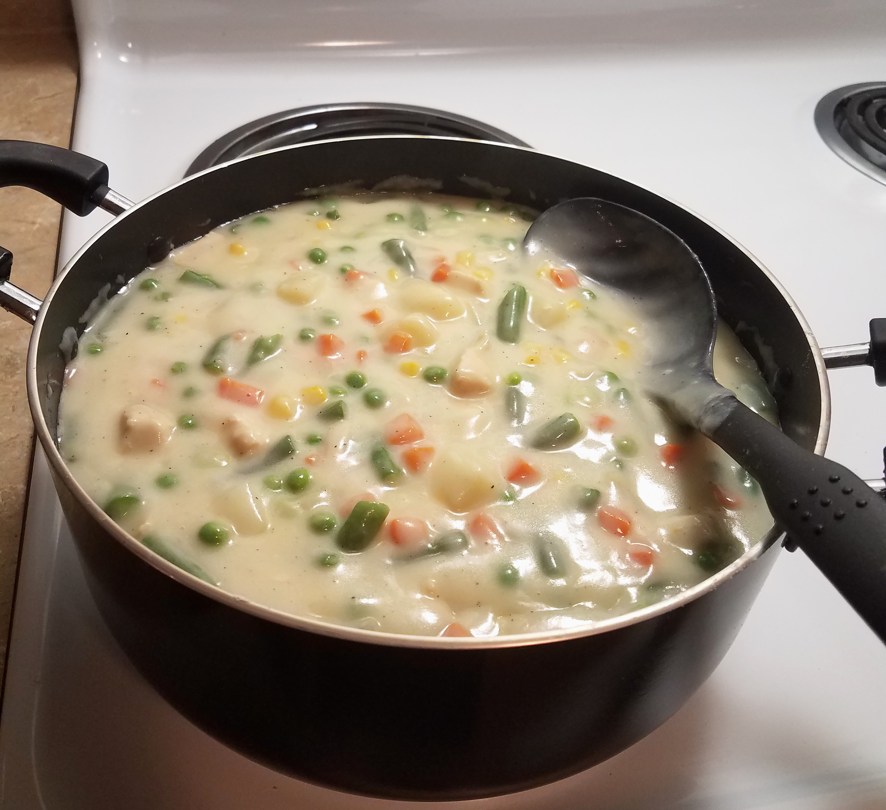

A delicious and hearty meal perfect for cold weather or when feeling ill
2 pounds cooked chicken breast
32 ounces of frozen mixed veggies
2/3 cup butter
2/3 cup flour
3 cups milk
2-3 large potatoes, boiled and diced
1 tsp salt
1/2 tsp pepper
4 cups chicken broth
Make sure chicken and potatoes are fully cooked and diced.
Rinse off veggies and raise to room temperature.
Melt butter over medium heat.
Once melted, add in flour, salt, and pepper. Continue to stir until mixture is firm, but bubbling.
Remove from heat and slowly add broth and milk. Boil for two minutes or mixture thickens.
Lower temperature once thickened, and add veggies, potato, and chicken.
Allow to simmer for 30 minutes, and allow another 20 to cool before serving.
